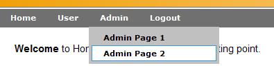

Package org.apache.click.extras.control
Class Menu
java.lang.Object
org.apache.click.control.AbstractControl
org.apache.click.extras.control.Menu
- All Implemented Interfaces:
Serializable,Control
Provides a hierarchical Menu control.
|  |
Configuration
Application menus are normally defined using a configuration file (menu.xml by default) located under the /WEB-INF directory
or the root classpath. An example Menu configuration file is provided below.
<?xml version="1.0" encoding="UTF-8" standalone="yes"?>
<menu>
<menu label="Home" path="user/home.htm" roles="tomcat, role1"/>
<menu label="User" path="user/home.htm" roles="tomcat, role1">
<menu label="User Page 1" path="user/user-1.htm" roles="tomcat, role1"/>
<menu label="User Page 2" path="user/user-2.htm" roles="tomcat, role1"/>
</menu>
<menu label="Admin" path="admin/admin-1.htm" roles="role1">
<menu label="Admin Page 1" path="admin/admin-1.htm" roles="tomcat, role1"/>
<menu label="Admin Page 2" path="admin/admin-2.htm" roles="tomcat, role1"/>
</menu>
</menu>
Use a MenuFactory to load the Menu items and include the root menu
item in your page:
public class BorderPage extends Page {
private Menu rootMenu;
public BorderPage() {
MenuFactory menuFactory = new MenuFactory();
rootMenu = menuFactory.getRootMenu();
addControl(rootMenu);
}
@Override
public String getTemplate() {
return "/border-template.htm";
}
}
Programmatically defined menus
It is also possible to create Menus programmatically, for example:
public class BorderPage extends Page {
private static class Menu rootMenu;
public BorderPage() {
if (rootMenu == null) {
rootMenu = new MenuBuilder().buildMenu();
}
addControl(rootMenu);
}
}
public class MenuBuilder() {
public Menu buildMenu() {
Menu rootMenu = new Menu("rootMenu");
rootMenu.add(createMenu("Home", "home.htm"));
Menu customerMenu = createMenu("Home", "home.htm");
rootMenu.add(customerMenu);
customerMenu.add(createMenu("Search Customers", "search-customers.htm"));
customerMenu.add(createMenu("Edit Customer", "edit-customer.htm"));
...
return rootMenu;
}
private Menu createMenu(String label, String path) {
Menu menu = new Menu();
menu.setLabel(label);
menu.setPath(path);
menu.setTitle(label);
return menu;
}
}
Rendering
To render the configured Menu hierarchy you can reference the root menu by its name in the Velocity template. For example:
$rootMenu
The hierarchical Menu structure is rendered as an HTML list: <ul>.
Alternatively, you can render the menu using a Velocity #macro or Velocity
code in your template. For example:
#writeMenu($rootMenu)An example menu Velocity macro is provided below:
#macro( writeMenu $rootMenu ) <table id="menuTable" border="0" width="100%" cellspacing="0" cellpadding="0" style="margin-top: 2px;"> <tr> <td> <div id="searchbar"> <div class="menustyle" id="menu"> <ul class="menubar" id="dmenu"> #foreach ($topMenu in $rootMenu.children) #if ($topMenu.isUserInRoles() || $topMenu.isUserInChildMenuRoles()) #if ($topMenu.children.empty) <li class="topitem">$topMenu</li> #else <li class="topitem">$topMenu <ul class="submenu" #foreach ($subMenu in $topMenu.children) #if ($subMenu.isUserInRoles()) ><li>$subMenu</li #end #end ></ul> </li> #end #end #end #if ($request.remoteUser) <li class="topitem"><a href="$logoutLink.href">Logout</a></li> #end </ul> </div> </div> </td> </tr> </table> #endThis example uses role path based security to only display the menu items the user is authorized to see. If you are not using this security feature in your application you should remove the macro
isUserInRoles() checks so
the menu items will be rendered.
Note individual menu items will render themselves as simple anchor tags using
their toString() method. For more fine grain control you should
extend your Velocity macro to render individual menu items.
Security
Menus support role based security via theisUserInRoles()
method. When creating secure menus define the valid roles in the menu items.
For example:
<?xml version="1.0" encoding="UTF-8" standalone="yes"?>
<menu>
<menu label="Home" path="user/home.htm" roles="user,admin">
<menu label="Home" path="user/home.htm" roles="user,admin"/>
<menu label="Search" path="user/search.htm" roles="user,admin"/>
</menu>
<menu label="Admin" path="admin/admin.htm">
<menu label="Home" path="admin/admin.htm" roles="admin"/>
</menu>
</menu>
The underlying implementation of isUserInRoles() method is provided by an
AccessController interface. The default AccessController is provided
by the RoleAccessController which uses the JEE container is user in
role facility. By providing your own AccessController you can have menu
access control using other security frameworks such as Spring
Security (Acegi) or Apache Shiro.
Menu Configuration DTD
The Menu config file DTD is provided below:<!-- The Menu (menu.xml) Document Type Definition. --> <!ELEMENT menu (menu*)> <!ATTLIST menu id ID #IMPLIED> <!ATTLIST menu name CDATA #IMPLIED> <!ATTLIST menu label CDATA #IMPLIED> <!ATTLIST menu path CDATA #IMPLIED> <!ATTLIST menu target CDATA #IMPLIED> <!ATTLIST menu title CDATA #IMPLIED> <!ATTLIST menu imageSrc CDATA #IMPLIED> <!ATTLIST menu external (true|false) "false"> <!ATTLIST menu separator (true|false) "false"> <!ATTLIST menu roles CDATA #IMPLIED> <!ATTLIST menu pages CDATA #IMPLIED>The Menu DTD is also published online at http://click.apache.org/dtds/menu-2.2.dtd.
Message Resources and Internationalization (i18n)
Menus automatically pick up localized messages where applicable. Please see the following methods on how to customize these messages:CSS and JavaScript resources
The Menu control makes use of the following resources (which Click automatically deploys to the application directory,/click):
click/menu.cssclick/extras-control.js
- See Also:
-
Field Summary
FieldsModifier and TypeFieldDescriptionprotected AccessControllerThe menu security access controller.The list of submenu items.protected static final StringThe menu configuration filename: "/WEB-INF/menu.xml".protected booleanThe menu path is to an external page flag, by default this value is false.protected StringThe image src path attribute.protected StringThe menu display label.The list of valid page paths.protected StringThe menu path.The list of valid role names.protected static MenuThe cached root Menu as defined inmenu.xml.protected booleanThe menu separator flag.protected StringThe target attribute.protected StringThe tooltip title attribute.Fields inherited from class org.apache.click.control.AbstractControl
actionListener, attributes, behaviors, headElements, listener, listenerMethod, messages, name, parent, stylesFields inherited from interface org.apache.click.Control
CONTROL_MESSAGES -
Constructor Summary
Constructors -
Method Summary
Modifier and TypeMethodDescriptionAdd the given menu as a submenu.protected booleanReturn true if the given menu can be rendered, false otherwise.booleanReturn true if this menu contains the given menu, false otherwise.Find the root menu, or null if no root menu can be found.Return the menu access controller.Return list of of submenu items.Return the Menu HEAD elements to be included in the page.getHref()Return the menu anchor HREF attribute.Return the image src path attribute.getLabel()Return the menu item display label.getPages()Return the list of valid Page paths for the Menu item.getPath()Return the path of the Menu item.getRoles()Return the list of roles for the Menu item.static MenuDeprecated.useMenuFactory.getRootMenu()insteadstatic MenugetRootMenu(AccessController accessController) Deprecated.Return the selected child menu, or null if no child menu is selected.Return the target attribute of the Menu item.getTitle()Return the 'title' attribute of the Menu item, or null if not defined.booleanReturn true if the menu contains any child submenus.booleanhasRoles()Return true if the menu has roles defined, false otherwise.booleanReturn true if the menu path refers to an external resource.booleanisRoot()Return true if this is the root menu, false otherwise.booleanReturn true if the Menu item is selected.booleanReturn true if the Menu item is a separator.booleanReturn true if any child menus have the user in one of their menu roles.booleanReturn true if the user is in one of the menu roles, or if any child menus have the user in one of their menu roles.protected static MenuloadRootMenu(AccessController accessController) voidThis sets the parent to be null.voidrender(HtmlStringBuffer buffer) Render an HTML representation of the Menu.protected voidrenderMenuHref(HtmlStringBuffer buffer) Render the menu"href"attribute.protected voidrenderMenuLink(HtmlStringBuffer buffer, Menu menu) Render an HTML link (<a>) representation of the given menu.protected voidrenderMenuList(HtmlStringBuffer buffer, Menu menu, int depth) Render an html representation of the menu list (<ul>) structure.protected voidrenderMenuListAttributes(HtmlStringBuffer buffer, Menu menu, int depth) Render the attributes of the menu list (>ul<).protected voidrenderMenuListItemAttributes(HtmlStringBuffer buffer, Menu menu, int depth) Render the attributes of the menu list item (>li<).protected voidrenderRootMenu(HtmlStringBuffer buffer) Render an HTML representation of the root menu.protected voidrenderSeparator(HtmlStringBuffer buffer, Menu menu) Render an HTML representation of the menu as a separator.voidsetAccessController(AccessController accessController) Set the menu access controller.voidsetExternal(boolean value) Set whether the menu path refers to an external resource.voidsetImageSrc(String src) Set the image src path attribute.voidSet the label of the Menu item.voidSet the list of valid Page paths.voidSet the path of the Menu item.voidSet the list of valid roles for the Menu item.voidsetSeparator(boolean separator) Set whether the Menu item is a separator.voidSet the target attribute of the Menu item.voidSet the title attribute of the Menu item.toString()Return an HTML representation of the menu.Methods inherited from class org.apache.click.control.AbstractControl
addBehavior, addStyleClass, appendAttributes, dispatchActionEvent, getActionListener, getAttribute, getAttributes, getBehaviors, getContext, getControlSizeEst, getHtmlImports, getId, getMessage, getMessage, getMessages, getName, getPage, getParent, getStyle, getStyles, getTag, hasAttribute, hasAttributes, hasBehaviors, hasStyles, isAjaxTarget, onDeploy, onInit, onProcess, onRender, removeBehavior, removeStyleClass, renderTagBegin, renderTagEnd, setActionListener, setAttribute, setId, setListener, setName, setParent, setStyle
-
Field Details
-
DEFAULT_CONFIG_FILE
The menu configuration filename: "/WEB-INF/menu.xml".- See Also:
-
rootMenu
The cached root Menu as defined inmenu.xml. -
accessController
The menu security access controller. -
children
The list of submenu items. -
external
protected boolean externalThe menu path is to an external page flag, by default this value is false. -
imageSrc
The image src path attribute. If the image src is defined then a<img/>element will rendered inside the link when using the MenutoString()method. If the image src value is prefixed with '/' then the request context path will be prefixed to the src value when rendered by the control. -
label
The menu display label. -
pages
The list of valid page paths. If any of these page paths match the current request then the Menu item will be selected. -
path
The menu path. -
roles
The list of valid role names. -
separator
protected boolean separatorThe menu separator flag. -
target
The target attribute. -
title
The tooltip title attribute.
-
-
Constructor Details
-
Menu
public Menu()Create a new Menu instance. Please ensure you have defined a menuaccessControllerif the menu'sisUserInRoles()method is going to be called.- See Also:
-
Menu
Create a new Menu instance with the given name. Please ensure you have defined a menuaccessControllerif the menu'sisUserInRoles()method is going to be called. For example:public class BorderPage extends Page { ... public void defineMenus() { // Define an accessController AccessController accessController = new RoleAccessController(); // Retrieve some user roles List roles = securityService.getRoles(); Menu menu = new Menu("root"); menu.setAccessController(accessController); menu.setRoles(roles); Menu subMenu = new Menu("products"); subMenu.setLabel("Products"); subMenu.setAccessController(accessController); subMenu.setRoles(roles); menu.add(subMenu); ... } }- Parameters:
name- the name of the menu
-
Menu
Deprecated.Create a Menu from the given menu-item XML Element.- Parameters:
menuElement- the menu-item XML ElementaccessController- the menu access controller
-
-
Method Details
-
getRootMenu
Deprecated.useMenuFactory.getRootMenu()insteadReturn root menu item defined in the WEB-INF/menu.xml or classpath menu.xml, and which uses JEE Role Based Access Control (RoleAccessController).- Returns:
- the root menu item defined in the WEB-INF/menu.xml file or menu.xml in the root classpath
- See Also:
-
getRootMenu
Deprecated.Return root menu item defined in the WEB-INF/menu.xml or classpath menu.xml, and which uses the provided AccessController.- Parameters:
accessController- the menu access controller- Returns:
- the root menu item defined in the WEB-INF/menu.xml file or menu.xml in the root classpath
-
getAccessController
Return the menu access controller.- Returns:
- the menu access controller
-
setAccessController
Set the menu access controller.- Parameters:
accessController- the menu access controller
-
hasChildren
public boolean hasChildren()Return true if the menu contains any child submenus.- Returns:
- true if the menu contains any child submenus
-
getChildren
Return list of of submenu items.- Returns:
- the list of submenu items
-
isExternal
public boolean isExternal()Return true if the menu path refers to an external resource.- Returns:
- true if the menu path refers to an external resource
-
setExternal
public void setExternal(boolean value) Set whether the menu path refers to an external resource.- Parameters:
value- the flag as to whether the menu path refers to an external resource
-
getImageSrc
Return the image src path attribute. If the image src is defined then a<img/>element will rendered inside the link when using the MenutoString()method. If the src value is prefixed with '/' then the request context path will be prefixed to the src value when rendered by the control.- Returns:
- the image src path attribute
-
setImageSrc
Set the image src path attribute. If the src value is prefixed with '/' then the request context path will be prefixed to the src value when rendered by the control.- Parameters:
src- the image src path attribute
-
getLabel
Return the menu item display label. If the label value is null, this method will attempt to find a localized label message in the parent messages of the root menu using the key:
If not found then the message will be looked up in thegetName() + ".label"/click-control.propertiesfile using the same key. If a value is still not found, the Menu name will be converted into a label using the method:ClickUtils.toLabel(String)For example given the properties filesrc/click-page.properties:customers.label=Customers customers.title=Find a specific customer
The menu.xml (note that no label attribute is present):<?xml version="1.0" encoding="UTF-8" standalone="yes"?> <menu> <menu name="customers" path="customers.htm" roles="view-customers"/> ... </menu>Will render the Menu label and title properties as:<li><a title="Find a specific customer" ... >Customers</a></li>
When a label value is not set, or defined in any properties files, then its value will be created from the Menu name. For example given themenu.xmlfile:<?xml version="1.0" encoding="UTF-8" standalone="yes"?> <menu> <menu name="product" path="product.htm" roles="view-product"/> ... </menu>Will render the Menu label as:<li><a ... >Product</a></li>- Returns:
- the display label of the Menu item
-
setLabel
Set the label of the Menu item.- Parameters:
label- the label of the Menu item
-
getPages
Return the list of valid Page paths for the Menu item. If any of these page paths match the current request then the Menu item will be selected.- Returns:
- the list of valid Page paths
-
setPages
Set the list of valid Page paths. If any of these page paths match the current request then the Menu item will be selected.- Parameters:
pages- the list of valid Page paths
-
getPath
Return the path of the Menu item.- Returns:
- the path of the Menu item
-
setPath
Set the path of the Menu item.- Parameters:
path- the path of the Menu item
-
hasRoles
public boolean hasRoles()Return true if the menu has roles defined, false otherwise.- Returns:
- true if the menu has roles defined, false otherwise
-
getRoles
Return the list of roles for the Menu item.- Returns:
- the list of roles for the Menu item
-
setRoles
Set the list of valid roles for the Menu item.- Parameters:
roles- the list of valid roles for the Menu item
-
isSelected
public boolean isSelected()Return true if the Menu item is selected.- Returns:
- true if the Menu item is selected
-
getSelectedChild
Return the selected child menu, or null if no child menu is selected.- Returns:
- the selected child menu
-
isSeparator
public boolean isSeparator()Return true if the Menu item is a separator.- Returns:
- true if the Menu item is a separator
-
setSeparator
public void setSeparator(boolean separator) Set whether the Menu item is a separator.- Parameters:
separator- the flag indicating whether the Menu item is a separator
-
isUserInRoles
public boolean isUserInRoles()Return true if the user is in one of the menu roles, or if any child menus have the user in one of their menu roles. Otherwise the method will return false. This method internally uses theAccessController#hasAccess(HttpServletRequest request, String roleName)method where the rolenames are derived from thegetRoles()property. If norolesare defined, the AccessController are invoked with anullargument to determine whether access is permitted to menus without roles.- Returns:
- true if the user is in one of the menu roles, or false otherwise
- Throws:
IllegalStateException- if the menu accessController is not defined
-
isUserInChildMenuRoles
public boolean isUserInChildMenuRoles()Return true if any child menus have the user in one of their menu roles. Otherwise the method will return false. This method internally uses theHttpServletRequestfunctionisUserInRole(rolename), where the rolenames are derived from thegetRoles()property.- Returns:
- true if the user is in one of the child menu roles, or false otherwise
-
getTarget
Return the target attribute of the Menu item.- Returns:
- the target attribute of the Menu item
-
setTarget
Set the target attribute of the Menu item.- Parameters:
target- the target attribute of the Menu item
-
getTitle
Return the 'title' attribute of the Menu item, or null if not defined. If the title value is null, this method will attempt to find a localized title message in the parent messages of the root menu using the key:
If not found then the message will be looked up in thegetName() + ".title"/click-control.propertiesfile using the same key. If still not found the title will be left as null and will not be rendered. For example given the properties filesrc/click-page.properties:customers.label=Customers customers.title=Find a specific customer
The menu.xml (note that no title attribute is present):<?xml version="1.0" encoding="UTF-8" standalone="yes"?> <menu> <menu name="customers" path="customers.htm" roles="view-customers"/> ... </menu>Will render the Menu label and title properties as:<li><a title="Find a specific customer" ... >Customers</a></li>
- Returns:
- the 'title' attribute of the Menu item
-
setTitle
Set the title attribute of the Menu item.- Parameters:
title- the title attribute of the Menu item
-
getHref
Return the menu anchor HREF attribute. If the menu is referring to an external path, this method will simply return the path, otherwise it will return the menu path prefixed with the request context path. If the path refers to a hash "#" symbol, this method will return a "#". It is useful to assign a "#" to the path of a menu item containing children, because most modern browsers will not submit the page if clicked on.- Returns:
- the menu anchor HREF attribute
-
getHeadElements
Return the Menu HEAD elements to be included in the page. The following resources are returned:click/menu.cssclick/control.jsclick/menu-fix-ie6.js(fixes IE6 menu burnthrough and hover issues)
- Specified by:
getHeadElementsin interfaceControl- Overrides:
getHeadElementsin classAbstractControl- Returns:
- the HTML HEAD elements for the control
- See Also:
-
add
Add the given menu as a submenu. The menu will also be set as the parent of the submenu.- Parameters:
menu- the submenu to add- Returns:
- the menu that was added
-
contains
Return true if this menu contains the given menu, false otherwise. To test if the given menu is contained, this method will test against both the menu object reference as well as the menu name.- Returns:
- true if this menu contains the given menu, false otherwise
-
findRootMenu
Find the root menu, or null if no root menu can be found.- Returns:
- the root menu, or null if no root menu can be found.
-
isRoot
public boolean isRoot()Return true if this is the root menu, false otherwise.- Returns:
- true if this menu is the root menu, false otherwise
-
onDestroy
public void onDestroy()This sets the parent to be null.- Specified by:
onDestroyin interfaceControl- Overrides:
onDestroyin classAbstractControl- See Also:
-
render
Render an HTML representation of the Menu. Ifthismenu instance is the root menu (isRoot()returns true), the menu and all its submenus (recursively), will be rendered by delegating rendering to the methodrenderRootMenu. The menu structure will be rendered as an HTML List consisting of <ul> and <li> elements. Ifthismenu instance isnotthe root menu, this menu will be rendered by delegating rendering to the methodrenderMenuLink(org.apache.click.util.HtmlStringBuffer, org.apache.click.extras.control.Menu). The menu will be rendered as a link: <a>. By having two render modes one can render the entire menu automatically, or render each menu item manually using a Velocity macro.- Specified by:
renderin interfaceControl- Overrides:
renderin classAbstractControl- Parameters:
buffer- the specified buffer to render the control's output to- See Also:
-
toString
Return an HTML representation of the menu.- Overrides:
toStringin classAbstractControl- Returns:
- an HTML anchor tag representation of the menu
- See Also:
-
renderRootMenu
Render an HTML representation of the root menu.- Parameters:
buffer- the buffer to render to
-
renderMenuList
Render an html representation of the menu list (<ul>) structure. Please note: the methodcanRender(menu)controls whether menu items are rendered or not. IfcanRenderreturns true, the menu item is rendered, otherwise it is skipped.- Parameters:
buffer- the buffer to render tomenu- the menu that is currently rendereddepth- the current depth in the menu hierarchy- See Also:
-
canRender
Return true if the given menu can be rendered, false otherwise. If the menuhas rolesdefined, this method will return true if the user is in one of the menu roles, false otherwise. This method delegates toisUserInRoles()if the menu has roles defined. If the menu has no roles defined, this method returns true.- Parameters:
menu- the menu that should be rendered or notdepth- the current depth in the menu hierarchy- Returns:
- true if the menu can be rendered, false otherwise
-
renderMenuListAttributes
Render the attributes of the menu list (>ul<).- Parameters:
buffer- the buffer to render tomenu- the menu being rendereddepth- the current depth in the menu hierarchy
-
renderMenuListItemAttributes
Render the attributes of the menu list item (>li<).- Parameters:
buffer- the buffer to render tomenu- the menu being rendereddepth- the current depth in the menu hierarchy
-
renderMenuLink
Render an HTML link (<a>) representation of the given menu. If the menu item is selected the anchor tag will be rendered with class="selected" attribute.- Parameters:
buffer- the buffer to render tomenu- the menu to render
-
renderSeparator
Render an HTML representation of the menu as a separator.- Parameters:
buffer- the buffer to render tomenu- the menu to render as a separator
-
renderMenuHref
Render the menu"href"attribute. This method can be overridden to render dynamic"href"parameters, for example:public class MyPage extends BorderPage { public MyPage() { Menu rootMenu = new MenuFactory().getRootMenu(); final String contextPath = getContext().getRequest().getContextPath(); Menu menu = new Menu() { @Override protected void renderMenuHref(HtmlStringBuffer buffer) { buffer.appendAttribute("href", contextPath + "/my-page.htm?customer=" + getCustomerId()); } }); menu.setName("customer"); menu.setLabel("Customer Lookup"); // Guard against adding child menu more than once if (!rootMenu.contains(menu)) { rootMenu.add(menu); } } }- Parameters:
buffer- the buffer to render the href attribute to
-
loadRootMenu
Deprecated.Return a copy of the Applications root Menu as defined in the configuration file "/WEB-INF/menu.xml", with the Control name"rootMenu". The returned root menu is always selected.- Parameters:
accessController- the menu access controller- Returns:
- a copy of the application's root Menu
-
MenuFactory.buildMenu(org.w3c.dom.Element, org.apache.click.extras.security.AccessController, java.lang.Class)instead